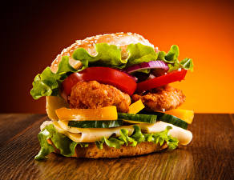
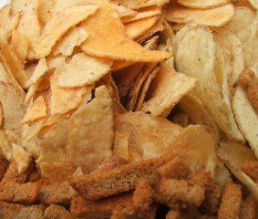
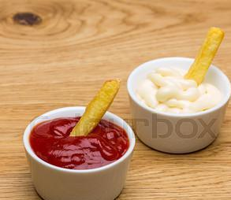
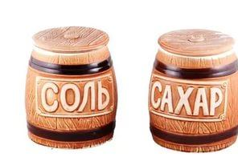
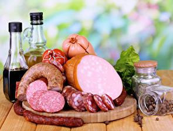
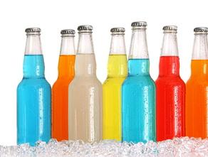
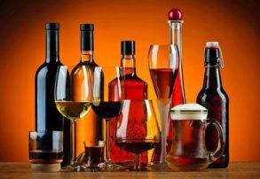

Содержание статьи 1. Главная страница 2. Преимущества ПП 3. Принципы в рамках ПП 4. ПП: меню на неделю 5. Варианты завтраков, обедов и ужинов 6. Советы напоследок 7. Невозможно НЕ похудеть 8. Вредные продукты 9. Полезные советы |
Вредные продукты
|
| Название вредного продукта | Описание | Изображение |
|---|---|---|
| Фаст-фуд | Фаст-фуд, возможно, и удалит чувство голода, но ненадолго. Это настолько переработанный продукт, что в своем составе он не имеет клетчатки – того, что как раз и помогает нам чувствовать себя сытым. Зато чего действительно много в таких продуктах, так это ароматизаторов и усилителей вкуса. Именно благодаря им человека, так сказать, держат на крючке, заставляя питаться быстрой едой каждый день. Так, если рассматривать обычный бургер, на 100 г приходится почти 49 г углеводов. Углеводы, конечно, нужны человеку, но явно не в таких чрезмерных количествах. |  |
| Чипсы и сухарики | Список вредных продуктов питания дополняют чипсы и сухарики. Эти продукты, популярные в особенности у подростков, несут очень большой вред. Далеко не все знают, что, например, чипсы изготавливают не из цельных овощей, а из картофельной муки, а обжаривают не на растительном масле, а на техническом жире. Сегодня ни один производитель не экономит на химических добавках. Проще говоря, такой товар, как чипсы и сухарики, не содержит ничего натурального. Зато содержит очень много соли и, главное, является довольно калорийным продуктом. Средняя пачка чипсов – это одна треть суточной нормы калорий, необходимых человеку. В общем, сплошная химия. |
 |
| Майонез и кетчуп | Покупая такой товар, мы подставляем под угрозу сосуды, от чего их стенки теряют гибкость. Консерванты, добавленные в майонез, делают его еще более вредным. Кетчуп, в свою очередь, почти не содержит натуральных томатов, зато переполнен ароматизаторами и прочими химическими добавками. Именно поэтому кетчуп следует исключить из своего рациона, а майонез лучше заменить сметаной. Она является не только безопасным, но еще и очень полезным продуктом. |  |
| Сахар и соль | Сахар и соль не могут не оказаться в списке вредных продуктов питания для здоровья человека. Начнем с того, что в сутки человеку необходимо 10-15 г соли. Мы же ее потребляем в 5, а то и 10 раз больше. Избыток соли нарушает баланс жидкости в организме. Отсюда возникают проблемы с почками, сердцем и сосудами. Могут возникнуть довольно серьезные заболевания. |  |
| Колбаса | Мы привыкли считать мясные продукты прекрасным источником белка. Также этот продукт содержит железо и витамины. Человеку с самого детства необходимы эти компоненты, чтобы нормально расти и обеспечивать организм самым необходимым в течение всей жизни. Это имеет место, если говорить о натуральном мясе. К сожалению, сегодня производят далеко не безопасные мясные продукты. В ход идет не только натуральное мясо, но и хрящи, кожа и различного рода остатки. |  |
| Газированные напитки | «Известия» публиковали статью о том, как за 4 года заболеваемость ожирением выросла вдвое. Цифры довольно пугающие. Кстати говоря, газированные напитки находятся в списке вредных продуктов Роспотребнадзора. В особенности это касается колы, являющейся очень опасным продуктом, особенно для детей. |  |
| Алкоголь | Он негативно влияет на целый ряд органов и систем органов человека. Очень сильно страдает сердечно-сосудистая система. При хроническом алкоголизме сердечная мышца повреждается настолько сильно, что это ведет к опасным заболеваниям или даже смерти, но такая же ситуация может встречаться и у людей с небольшим стажем. Проявляется это в виде гипертонии, ишемической болезни сердца и инфарктов. |  |
ПП: питание для похудения, меню на неделю из простых продуктов
Версия на Дивах